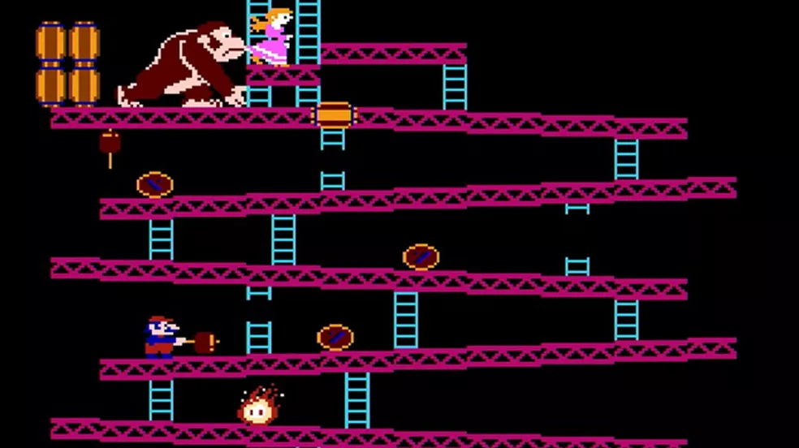
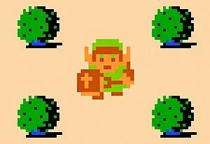
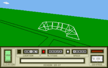

Evolução dos jogos durante o tempo
- Escola; Timbu velho 2023
- Estudante; Kevin Davi 2.a
OS JOGOS ELETRÔNICOS
Quando surgiu os jogos eletrônicos?
No início, os jogos eletrônicos eram bastante
simples, com gráficos básicos e sem som. A.
Higinbotham criou um dos primeiros
videogames, Tennis for Two (“tênis para dois”), em
1958.
 O primeiro jogo de fliperama chamouse Computer Space e foi lançado em 1971. Logo
outros jogos de sucesso surgiram, como Pong, Invasores do espaço e Pac-Man. O primeiro
console caseiro também surgiu nessa época. Em 1977, a empresa Atari lançou um console
com cartuchos removíveis. Cada cartucho fazia rodar um jogo diferente. Com esse sistema,
os jogos eletrônicos ganharam popularidade, mas as
pessoas ainda queriam imagens e sons melhores.
O primeiro jogo de fliperama chamouse Computer Space e foi lançado em 1971. Logo
outros jogos de sucesso surgiram, como Pong, Invasores do espaço e Pac-Man. O primeiro
console caseiro também surgiu nessa época. Em 1977, a empresa Atari lançou um console
com cartuchos removíveis. Cada cartucho fazia rodar um jogo diferente. Com esse sistema,
os jogos eletrônicos ganharam popularidade, mas as
pessoas ainda queriam imagens e sons melhores.
Donkey kong
Em 1981, Shigeru Miyamoto – Nintendo – lançou o
Donkey Kong. Em seu enredo, o herói, com o apelido de
Jumpman, um carpinteiro baixinho, deveria salvar sua
namorada Pauline das garras de um gorila raivoso. Para
isso era preciso que o carpinteiro vencesse obstáculos, saltasse por cipós, atravessasse
rios até encontrá-la e resgatá-la.
Zelda
A IGN norte americana defende que o primeiro Mundo Aberto
realmente influente como conhecemos hoje está no primeiro The Legend of Zelda
para o Nintendinho em 1986. Dez anos mais tarde aconteceria o mesmo com o Super Mario 64
no universo 3D, que também apresentava um mundo aberto explorável,
mesmo que ele tivesse o sistema de fases.quase 20 títulos criados,
com games que marcaram a história dos consoles da Nintendo, como o
Super Nintendo (SNES), Game Boy Advance e o Wii.
Mercenary
Já o primeiro game tridimensional que pode ser considerado
oficialmente como o "primeiro jogo de mundo aberto em 3D" foi o Mercenary(Novagen Software), de 1985,
lançado para computadores. Este era renderizado em gráficos 3D e as pessoas cumpriam
missões de modo não linear.
Mario Bros
 após a sucesso de donkey kong foi lançado o Mario Bros.
no Japão em 13 de setembro de 1985, para o Family Computer.
Foi lançado mais tarde naquele ano na América do Norte para
o Nintendo Entertainment System (NES).A franquia já gerou mais
de 200 jogos de séries e gêneros diferentes, incluindo Super
Mario, Mario Kart, Mario Party, Paper Mario, Mario Tennis,
Mario Golf, Dr. Mario entre outros.
após a sucesso de donkey kong foi lançado o Mario Bros.
no Japão em 13 de setembro de 1985, para o Family Computer.
Foi lançado mais tarde naquele ano na América do Norte para
o Nintendo Entertainment System (NES).A franquia já gerou mais
de 200 jogos de séries e gêneros diferentes, incluindo Super
Mario, Mario Kart, Mario Party, Paper Mario, Mario Tennis,
Mario Golf, Dr. Mario entre outros.
após a Evolução dos jogos eles foram cada vez mais realistas, entretanto
alguns jogos atuais ainda usam o 2d como hollow knight stardew valley, etc porém outros
usam o 3d realista como detroid,the last of us, etc.